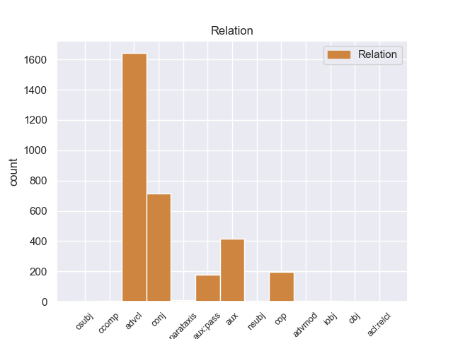
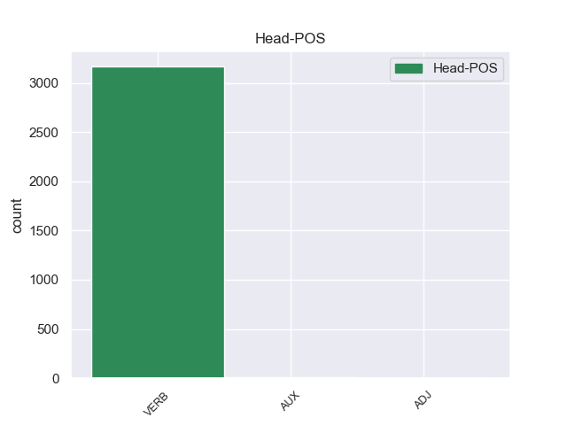
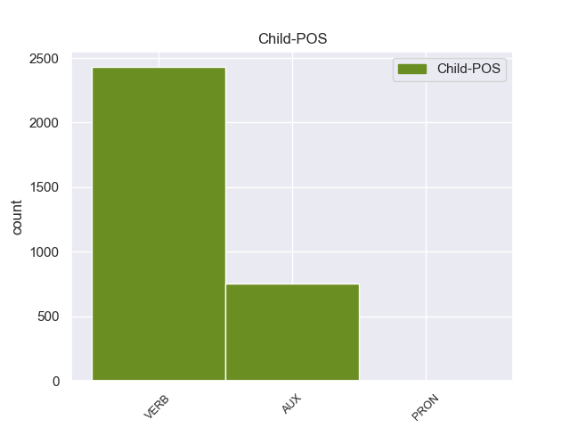

Distribution of features within this leaf



Agreement Rules sorted by frequency.
- When the dependent token is the adverbial clause modifier(advcl) of the head token,
1 De _ _ _ _ 0 _ _ _
2 los _ _ _ _ 0 _ _ _
3 714 _ _ _ _ 0 _ _ _
4 habitantes _ _ _ _ 0 _ _ _
5 , _ _ _ _ 0 _ _ _
6 el _ _ _ _ 0 _ _ _
7 municipio _ _ _ _ 0 _ _ _
8 de _ _ _ _ 0 _ _ _
9 Daggett _ _ _ _ 0 _ _ _
10 estaba _ _ _ _ 0 _ _ _
11 compuesto _ _ _ _ 0 _ _ _
12 por _ _ _ _ 0 _ _ _
13 el _ _ _ _ 0 _ _ _
14 93.28 _ _ _ _ 0 _ _ _
15 % _ _ _ _ 0 _ _ _
16 blancos _ _ _ _ 0 _ _ _
17 , _ _ _ _ 0 _ _ _
18 el _ _ _ _ 0 _ _ _
19 2.38 _ _ _ _ 0 _ _ _
20 % _ _ _ _ 0 _ _ _
21 eran _ _ _ _ 0 _ _ _
22 afroamericanos _ _ _ _ 0 _ _ _
23 , _ _ _ _ 0 _ _ _
24 el _ _ _ _ 0 _ _ _
25 0.84 _ _ _ _ 0 _ _ _
26 % _ _ _ _ 0 _ _ _
27 eran _ _ _ _ 0 _ _ _
28 amerindios _ _ _ _ 0 _ _ _
29 , _ _ _ _ 0 _ _ _
30 el _ _ _ _ 0 _ _ _
31 0.56 _ _ _ _ 0 _ _ _
32 % _ _ _ _ 0 _ _ _
33 eran _ _ _ _ 0 _ _ _
34 asiáticos _ _ _ _ 0 _ _ _
35 , _ _ _ _ 0 _ _ _
36 el _ _ _ _ 0 _ _ _
37 0 _ _ _ _ 0 _ _ _
38 % _ _ _ _ 0 _ _ _
39 eran _ _ _ _ 0 _ _ _
40 isleños _ _ _ _ 0 _ _ _
41 de _ _ _ _ 0 _ _ _
42 el _ _ _ _ 0 _ _ _
43 Pacífico _ _ _ _ 0 _ _ _
44 , _ _ _ _ 0 _ _ _
45 el _ _ _ _ 0 _ _ _
46 0.84 _ _ _ _ 0 _ _ _
47 % _ _ _ _ 0 _ _ _
48 eran eer VERB _ Mood=Ind|Number=Plur|Person=3|Tense=Imp|VerbForm=Fin 0 _ _ _
49 de _ _ _ _ 0 _ _ _
50 otras _ _ _ _ 0 _ _ _
51 razas _ _ _ _ 0 _ _ _
52 y _ _ _ _ 0 _ _ _
53 el _ _ _ _ 0 _ _ _
54 2.1 _ _ _ _ 0 _ _ _
55 % _ _ _ _ 0 _ _ _
56 pertenecían pertenecer VERB _ Mood=Ind|Number=Plur|Person=3|Tense=Imp|VerbForm=Fin 48 advcl _ _
57 a _ _ _ _ 0 _ _ _
58 dos _ _ _ _ 0 _ _ _
59 o _ _ _ _ 0 _ _ _
60 más _ _ _ _ 0 _ _ _
61 razas _ _ _ _ 0 _ _ _
62 . _ _ _ _ 0 _ _ _
1 Una _ _ _ _ 0 _ _ _
2 vez _ _ _ _ 0 _ _ _
3 que _ _ _ _ 0 _ _ _
4 el _ _ _ _ 0 _ _ _
5 Hijo _ _ _ _ 0 _ _ _
6 de _ _ _ _ 0 _ _ _
7 Krypton _ _ _ _ 0 _ _ _
8 suelta suelta VERB _ Mood=Ind|Number=Sing|Person=3|Tense=Pres|VerbForm=Fin 0 _ _ _
9 el _ _ _ _ 0 _ _ _
10 misil _ _ _ _ 0 _ _ _
11 , _ _ _ _ 0 _ _ _
12 este _ _ _ _ 0 _ _ _
13 intenta intentar VERB _ Mood=Ind|Number=Sing|Person=3|Tense=Pres|VerbForm=Fin 8 conj _ _
14 huir _ _ _ _ 0 _ _ _
15 de _ _ _ _ 0 _ _ _
16 el _ _ _ _ 0 _ _ _
17 lugar _ _ _ _ 0 _ _ _
18 pero _ _ _ _ 0 _ _ _
19 es _ _ _ _ 0 _ _ _
20 atrapado _ _ _ _ 0 _ _ _
21 en _ _ _ _ 0 _ _ _
22 la _ _ _ _ 0 _ _ _
23 explosión _ _ _ _ 0 _ _ _
24 . _ _ _ _ 0 _ _ _
1 De _ _ _ _ 0 _ _ _
2 la _ _ _ _ 0 _ _ _
3 Vega _ _ _ _ 0 _ _ _
4 ha haber AUX _ Mood=Ind|Number=Sing|Person=3|Tense=Pres|VerbForm=Fin 5 aux _ _
5 pedido pedido VERB _ Mood=Ind|Number=Sing|Person=3|Tense=Pres|VerbForm=Fin 0 _ _ _
6 respetar _ _ _ _ 0 _ _ _
7 los _ _ _ _ 0 _ _ _
8 tiempos _ _ _ _ 0 _ _ _
9 de _ _ _ _ 0 _ _ _
10 los _ _ _ _ 0 _ _ _
11 procesos _ _ _ _ 0 _ _ _
12 y _ _ _ _ 0 _ _ _
13 de _ _ _ _ 0 _ _ _
14 la _ _ _ _ 0 _ _ _
15 misma _ _ _ _ 0 _ _ _
16 manera _ _ _ _ 0 _ _ _
17 que _ _ _ _ 0 _ _ _
18 no _ _ _ _ 0 _ _ _
19 ha _ _ _ _ 0 _ _ _
20 querido _ _ _ _ 0 _ _ _
21 entrar _ _ _ _ 0 _ _ _
22 en _ _ _ _ 0 _ _ _
23 la _ _ _ _ 0 _ _ _
24 salida _ _ _ _ 0 _ _ _
25 de _ _ _ _ 0 _ _ _
26 Corbacho _ _ _ _ 0 _ _ _
27 , _ _ _ _ 0 _ _ _
28 tampoco _ _ _ _ 0 _ _ _
29 lo _ _ _ _ 0 _ _ _
30 ha _ _ _ _ 0 _ _ _
31 hecho _ _ _ _ 0 _ _ _
32 la _ _ _ _ 0 _ _ _
33 posible _ _ _ _ 0 _ _ _
34 salida _ _ _ _ 0 _ _ _
35 de _ _ _ _ 0 _ _ _
36 Trinidad _ _ _ _ 0 _ _ _
37 Jiménez _ _ _ _ 0 _ _ _
38 , _ _ _ _ 0 _ _ _
39 que _ _ _ _ 0 _ _ _
40 le _ _ _ _ 0 _ _ _
41 acompañaba _ _ _ _ 0 _ _ _
42 en _ _ _ _ 0 _ _ _
43 la _ _ _ _ 0 _ _ _
44 sala _ _ _ _ 0 _ _ _
45 de _ _ _ _ 0 _ _ _
46 prensa _ _ _ _ 0 _ _ _
47 . _ _ _ _ 0 _ _ _
1 Joramun _ _ _ _ 0 _ _ _
2 se _ _ _ _ 0 _ _ _
3 supone supone VERB _ Mood=Ind|Number=Sing|Person=3|Tense=Past|VerbForm=Fin 0 _ _ _
4 que _ _ _ _ 0 _ _ _
5 era ser AUX _ Mood=Ind|Number=Sing|Person=3|Tense=Imp|VerbForm=Fin 3 cop _ _
6 un _ _ _ _ 0 _ _ _
7 legendario _ _ _ _ 0 _ _ _
8 Rey _ _ _ _ 0 _ _ _
9 - _ _ _ _ 0 _ _ _
10 Más _ _ _ _ 0 _ _ _
11 - _ _ _ _ 0 _ _ _
12 Allá _ _ _ _ 0 _ _ _
13 - _ _ _ _ 0 _ _ _
14 de _ _ _ _ 0 _ _ _
15 el _ _ _ _ 0 _ _ _
16 - _ _ _ _ 0 _ _ _
17 Muro _ _ _ _ 0 _ _ _
18 , _ _ _ _ 0 _ _ _
19 a _ _ _ _ 0 _ _ _
20 el _ _ _ _ 0 _ _ _
21 norte _ _ _ _ 0 _ _ _
22 de _ _ _ _ 0 _ _ _
23 los _ _ _ _ 0 _ _ _
24 Siete _ _ _ _ 0 _ _ _
25 Reinos _ _ _ _ 0 _ _ _
26 . _ _ _ _ 0 _ _ _
1 En _ _ _ _ 0 _ _ _
2 los _ _ _ _ 0 _ _ _
3 premios _ _ _ _ 0 _ _ _
4 Empire _ _ _ _ 0 _ _ _
5 Awards _ _ _ _ 0 _ _ _
6 , _ _ _ _ 0 _ _ _
7 fue ser AUX _ Mood=Ind|Number=Sing|Person=3|Tense=Past|VerbForm=Fin 8 aux:pass _ _
8 galardonado galardonado VERB _ Mood=Ind|Number=Sing|Person=3|Tense=Past|VerbForm=Fin 0 _ _ _
9 con _ _ _ _ 0 _ _ _
10 el _ _ _ _ 0 _ _ _
11 premio _ _ _ _ 0 _ _ _
12 honorífico _ _ _ _ 0 _ _ _
13 a _ _ _ _ 0 _ _ _
14 toda _ _ _ _ 0 _ _ _
15 su _ _ _ _ 0 _ _ _
16 carrera _ _ _ _ 0 _ _ _
17 cinematográfica _ _ _ _ 0 _ _ _
18 , _ _ _ _ 0 _ _ _
19 convirtiéndo _ _ _ _ 0 _ _ _
20 se _ _ _ _ 0 _ _ _
21 así _ _ _ _ 0 _ _ _
22 en _ _ _ _ 0 _ _ _
23 un _ _ _ _ 0 _ _ _
24 icono _ _ _ _ 0 _ _ _
25 de _ _ _ _ 0 _ _ _
26 la _ _ _ _ 0 _ _ _
27 Historia _ _ _ _ 0 _ _ _
28 de _ _ _ _ 0 _ _ _
29 el _ _ _ _ 0 _ _ _
30 cine _ _ _ _ 0 _ _ _
31 . _ _ _ _ 0 _ _ _
1 Hacia _ _ _ _ 0 _ _ _
2 el _ _ _ _ 0 _ _ _
3 Sir _ _ _ _ 0 _ _ _
4 de _ _ _ _ 0 _ _ _
5 Ceremonia _ _ _ _ 0 _ _ _
6 de _ _ _ _ 0 _ _ _
7 Fundación _ _ _ _ 0 _ _ _
8 Lancelot _ _ _ _ 0 _ _ _
9 Graham _ _ _ _ 0 _ _ _
10 expresaba expresaba VERB _ Mood=Ind|Number=Sing|Person=3|Tense=Past|VerbForm=Fin 0 _ _ _
11 necesitar _ _ _ _ 0 _ _ _
12 para _ _ _ _ 0 _ _ _
13 una _ _ _ _ 0 _ _ _
14 Casa _ _ _ _ 0 _ _ _
15 nueva _ _ _ _ 0 _ _ _
16 como _ _ _ _ 0 _ _ _
17 la _ _ _ _ 0 _ _ _
18 Casa _ _ _ _ 0 _ _ _
19 de _ _ _ _ 0 _ _ _
20 Gobierno _ _ _ _ 0 _ _ _
21 anterior _ _ _ _ 0 _ _ _
22 ( _ _ _ _ 0 _ _ _
23 La _ _ _ _ 0 _ _ _
24 Casa _ _ _ _ 0 _ _ _
25 de _ _ _ _ 0 _ _ _
26 Gobierno _ _ _ _ 0 _ _ _
27 de _ _ _ _ 0 _ _ _
28 Napier _ _ _ _ 0 _ _ _
29 ) _ _ _ _ 0 _ _ _
30 estaba ester VERB _ Mood=Ind|Number=Sing|Person=3|Tense=Imp|VerbForm=Fin 10 parataxis _ _
31 en _ _ _ _ 0 _ _ _
32 la _ _ _ _ 0 _ _ _
33 condición _ _ _ _ 0 _ _ _
34 dilapidado _ _ _ _ 0 _ _ _
35 y _ _ _ _ 0 _ _ _
36 ya _ _ _ _ 0 _ _ _
37 no _ _ _ _ 0 _ _ _
38 seguro _ _ _ _ 0 _ _ _
39 para _ _ _ _ 0 _ _ _
40 habitación _ _ _ _ 0 _ _ _
41 . _ _ _ _ 0 _ _ _
1 Nació nació VERB _ Mood=Ind|Number=Sing|Person=3|Tense=Pres|VerbForm=Fin 10 nsubj _ _
2 en _ _ _ _ 0 _ _ _
3 La _ _ _ _ 0 _ _ _
4 Grita _ _ _ _ 0 _ _ _
5 , _ _ _ _ 0 _ _ _
6 Municipio _ _ _ _ 0 _ _ _
7 Jáuregui _ _ _ _ 0 _ _ _
8 , _ _ _ _ 0 _ _ _
9 se _ _ _ _ 0 _ _ _
10 graduó graduó VERB _ Mood=Ind|Number=Sing|Person=3|Tense=Past|VerbForm=Fin 0 _ _ _
11 de _ _ _ _ 0 _ _ _
12 bachiller _ _ _ _ 0 _ _ _
13 en _ _ _ _ 0 _ _ _
14 el _ _ _ _ 0 _ _ _
15 Liceo _ _ _ _ 0 _ _ _
16 Militar _ _ _ _ 0 _ _ _
17 Jáuregui _ _ _ _ 0 _ _ _
18 , _ _ _ _ 0 _ _ _
19 luego _ _ _ _ 0 _ _ _
20 se _ _ _ _ 0 _ _ _
21 traslada _ _ _ _ 0 _ _ _
22 a _ _ _ _ 0 _ _ _
23 San _ _ _ _ 0 _ _ _
24 Cristóbal _ _ _ _ 0 _ _ _
25 para _ _ _ _ 0 _ _ _
26 emprender _ _ _ _ 0 _ _ _
27 estudios _ _ _ _ 0 _ _ _
28 de _ _ _ _ 0 _ _ _
29 Derecho _ _ _ _ 0 _ _ _
30 en _ _ _ _ 0 _ _ _
31 la _ _ _ _ 0 _ _ _
32 Universidad _ _ _ _ 0 _ _ _
33 Católica _ _ _ _ 0 _ _ _
34 de _ _ _ _ 0 _ _ _
35 el _ _ _ _ 0 _ _ _
36 Táchira _ _ _ _ 0 _ _ _
37 , _ _ _ _ 0 _ _ _
38 donde _ _ _ _ 0 _ _ _
39 obtuvo _ _ _ _ 0 _ _ _
40 el _ _ _ _ 0 _ _ _
41 título _ _ _ _ 0 _ _ _
42 de _ _ _ _ 0 _ _ _
43 Abogado _ _ _ _ 0 _ _ _
44 de _ _ _ _ 0 _ _ _
45 la _ _ _ _ 0 _ _ _
46 República _ _ _ _ 0 _ _ _
47 , _ _ _ _ 0 _ _ _
48 más _ _ _ _ 0 _ _ _
49 adelante _ _ _ _ 0 _ _ _
50 viaja _ _ _ _ 0 _ _ _
51 a _ _ _ _ 0 _ _ _
52 la _ _ _ _ 0 _ _ _
53 ciudad _ _ _ _ 0 _ _ _
54 de _ _ _ _ 0 _ _ _
55 Caracas _ _ _ _ 0 _ _ _
56 para _ _ _ _ 0 _ _ _
57 cursar _ _ _ _ 0 _ _ _
58 estudios _ _ _ _ 0 _ _ _
59 de _ _ _ _ 0 _ _ _
60 postgrado _ _ _ _ 0 _ _ _
61 en _ _ _ _ 0 _ _ _
62 la _ _ _ _ 0 _ _ _
63 Universidad _ _ _ _ 0 _ _ _
64 Central _ _ _ _ 0 _ _ _
65 de _ _ _ _ 0 _ _ _
66 Venezuela _ _ _ _ 0 _ _ _
67 , _ _ _ _ 0 _ _ _
68 obteniendo _ _ _ _ 0 _ _ _
69 el _ _ _ _ 0 _ _ _
70 Título _ _ _ _ 0 _ _ _
71 de _ _ _ _ 0 _ _ _
72 Especialista _ _ _ _ 0 _ _ _
73 en _ _ _ _ 0 _ _ _
74 Derecho _ _ _ _ 0 _ _ _
75 Administrativo _ _ _ _ 0 _ _ _
76 . _ _ _ _ 0 _ _ _
1 Es _ _ _ _ 0 _ _ _
2 importante importante VERB _ Mood=Ind|Number=Sing|Person=3|Tense=Pres|VerbForm=Fin 6 advmod _ _
3 que _ _ _ _ 0 _ _ _
4 esto _ _ _ _ 0 _ _ _
5 se _ _ _ _ 0 _ _ _
6 modifique modifique VERB _ Mood=Ind|Number=Sing|Person=3|Tense=Past|VerbForm=Fin 0 _ _ _
7 para _ _ _ _ 0 _ _ _
8 que _ _ _ _ 0 _ _ _
9 aquellos _ _ _ _ 0 _ _ _
10 turistas _ _ _ _ 0 _ _ _
11 que _ _ _ _ 0 _ _ _
12 consultan _ _ _ _ 0 _ _ _
13 por _ _ _ _ 0 _ _ _
14 internet _ _ _ _ 0 _ _ _
15 hoteles _ _ _ _ 0 _ _ _
16 no _ _ _ _ 0 _ _ _
17 terminen _ _ _ _ 0 _ _ _
18 en _ _ _ _ 0 _ _ _
19 cualquier _ _ _ _ 0 _ _ _
20 lado _ _ _ _ 0 _ _ _
21 . _ _ _ _ 0 _ _ _
1 Algunos _ _ _ _ 0 _ _ _
2 historiadores _ _ _ _ 0 _ _ _
3 españoles _ _ _ _ 0 _ _ _
4 como _ _ _ _ 0 _ _ _
5 Jerónimo _ _ _ _ 0 _ _ _
6 Bécker _ _ _ _ 0 _ _ _
7 , _ _ _ _ 0 _ _ _
8 consideran consideranr VERB _ Mood=Ind|Number=Sing|Person=3|Tense=Pres|VerbForm=Fin 0 _ _ _
9 que _ _ _ _ 0 _ _ _
10 es _ _ _ _ 0 _ _ _
11 posible posible VERB _ Mood=Ind|Number=Sing|Person=3|Tense=Pres|VerbForm=Fin 8 ccomp _ _
12 que _ _ _ _ 0 _ _ _
13 se _ _ _ _ 0 _ _ _
14 trate _ _ _ _ 0 _ _ _
15 de _ _ _ _ 0 _ _ _
16 una _ _ _ _ 0 _ _ _
17 falsificación _ _ _ _ 0 _ _ _
18 , _ _ _ _ 0 _ _ _
19 mientras _ _ _ _ 0 _ _ _
20 que _ _ _ _ 0 _ _ _
21 la _ _ _ _ 0 _ _ _
22 historiografía _ _ _ _ 0 _ _ _
23 no _ _ _ _ 0 _ _ _
24 española _ _ _ _ 0 _ _ _
25 da _ _ _ _ 0 _ _ _
26 por _ _ _ _ 0 _ _ _
27 seguro _ _ _ _ 0 _ _ _
28 la _ _ _ _ 0 _ _ _
29 falsificación _ _ _ _ 0 _ _ _
30 . _ _ _ _ 0 _ _ _
1 Cuando _ _ _ _ 0 _ _ _
2 fuman _ _ _ _ 0 _ _ _
3 su _ _ _ _ 0 _ _ _
4 primer _ _ _ _ 0 _ _ _
5 porro _ _ _ _ 0 _ _ _
6 de _ _ _ _ 0 _ _ _
7 dicha _ _ _ _ 0 _ _ _
8 planta _ _ _ _ 0 _ _ _
9 , _ _ _ _ 0 _ _ _
10 se _ _ _ _ 0 _ _ _
11 les él PRON _ Mood=Ind|Number=Plur|Person=3|Tense=Pres|VerbForm=Fin 12 iobj _ _
12 aparece aparecer VERB _ Mood=Ind|Number=Sing|Person=3|Tense=Pres|VerbForm=Fin 0 _ _ _
13 el _ _ _ _ 0 _ _ _
14 fantasma _ _ _ _ 0 _ _ _
15 de _ _ _ _ 0 _ _ _
16 Ivory _ _ _ _ 0 _ _ _
17 , _ _ _ _ 0 _ _ _
18 que _ _ _ _ 0 _ _ _
19 les _ _ _ _ 0 _ _ _
20 ayuda _ _ _ _ 0 _ _ _
21 en _ _ _ _ 0 _ _ _
22 sus _ _ _ _ 0 _ _ _
23 exámenes _ _ _ _ 0 _ _ _
24 para _ _ _ _ 0 _ _ _
25 ingresar _ _ _ _ 0 _ _ _
26 en _ _ _ _ 0 _ _ _
27 la _ _ _ _ 0 _ _ _
28 Universidad _ _ _ _ 0 _ _ _
29 de _ _ _ _ 0 _ _ _
30 Harvard _ _ _ _ 0 _ _ _
31 , _ _ _ _ 0 _ _ _
32 donde _ _ _ _ 0 _ _ _
33 tendrán _ _ _ _ 0 _ _ _
34 que _ _ _ _ 0 _ _ _
35 adaptar _ _ _ _ 0 _ _ _
36 se _ _ _ _ 0 _ _ _
37 a _ _ _ _ 0 _ _ _
38 la _ _ _ _ 0 _ _ _
39 vida _ _ _ _ 0 _ _ _
40 unversitaria _ _ _ _ 0 _ _ _
41 . _ _ _ _ 0 _ _ _
1 De _ _ _ _ 0 _ _ _
2 Baba _ _ _ _ 0 _ _ _
3 Adam _ _ _ _ 0 _ _ _
4 se _ _ _ _ 0 _ _ _
5 dice decir VERB _ Mood=Ind|Number=Sing|Person=3|Tense=Pres|VerbForm=Fin 0 _ _ _
6 que _ _ _ _ 0 _ _ _
7 tuvo tener VERB _ Mood=Ind|Number=Sing|Person=3|Tense=Past|VerbForm=Fin 5 csubj _ _
8 un _ _ _ _ 0 _ _ _
9 contemporáneo _ _ _ _ 0 _ _ _
10 de _ _ _ _ 0 _ _ _
11 el _ _ _ _ 0 _ _ _
12 famoso _ _ _ _ 0 _ _ _
13 Rani _ _ _ _ 0 _ _ _
14 Bhawani _ _ _ _ 0 _ _ _
15 de _ _ _ _ 0 _ _ _
16 Natore _ _ _ _ 0 _ _ _
17 , _ _ _ _ 0 _ _ _
18 de _ _ _ _ 0 _ _ _
19 quien _ _ _ _ 0 _ _ _
20 se _ _ _ _ 0 _ _ _
21 dice _ _ _ _ 0 _ _ _
22 que _ _ _ _ 0 _ _ _
23 , _ _ _ _ 0 _ _ _
24 debido _ _ _ _ 0 _ _ _
25 a _ _ _ _ 0 _ _ _
26 sus _ _ _ _ 0 _ _ _
27 magnánimas _ _ _ _ 0 _ _ _
28 características _ _ _ _ 0 _ _ _
29 , _ _ _ _ 0 _ _ _
30 tuvo _ _ _ _ 0 _ _ _
31 un _ _ _ _ 0 _ _ _
32 depósito _ _ _ _ 0 _ _ _
33 en _ _ _ _ 0 _ _ _
34 el _ _ _ _ 0 _ _ _
35 lugar _ _ _ _ 0 _ _ _
36 que _ _ _ _ 0 _ _ _
37 se _ _ _ _ 0 _ _ _
38 lo _ _ _ _ 0 _ _ _
39 dedicaron _ _ _ _ 0 _ _ _
40 a _ _ _ _ 0 _ _ _
41 el _ _ _ _ 0 _ _ _
42 santo _ _ _ _ 0 _ _ _
43 fakir _ _ _ _ 0 _ _ _
44 en _ _ _ _ 0 _ _ _
45 honor _ _ _ _ 0 _ _ _
46 a _ _ _ _ 0 _ _ _
47 sus _ _ _ _ 0 _ _ _
48 poderes _ _ _ _ 0 _ _ _
49 sobrenaturales _ _ _ _ 0 _ _ _
50 . _ _ _ _ 0 _ _ _
1 Entonces _ _ _ _ 0 _ _ _
2 , _ _ _ _ 0 _ _ _
3 el _ _ _ _ 0 _ _ _
4 grupo _ _ _ _ 0 _ _ _
5 derrota _ _ _ _ 0 _ _ _
6 a _ _ _ _ 0 _ _ _
7 el _ _ _ _ 0 _ _ _
8 bandido _ _ _ _ 0 _ _ _
9 y _ _ _ _ 0 _ _ _
10 el _ _ _ _ 0 _ _ _
11 rey _ _ _ _ 0 _ _ _
12 , _ _ _ _ 0 _ _ _
13 como _ _ _ _ 0 _ _ _
14 gratitud _ _ _ _ 0 _ _ _
15 les les PRON _ Mood=Ind|Number=Plur|Person=3|Tense=Past|VerbForm=Fin 16 obj _ _
16 da dar VERB _ Mood=Ind|Number=Sing|Person=3|Tense=Pres|VerbForm=Fin 0 _ _ _
17 su _ _ _ _ 0 _ _ _
18 armadura _ _ _ _ 0 _ _ _
19 . _ _ _ _ 0 _ _ _
1 El _ _ _ _ 0 _ _ _
2 Escudo _ _ _ _ 0 _ _ _
3 de _ _ _ _ 0 _ _ _
4 el _ _ _ _ 0 _ _ _
5 estado _ _ _ _ 0 _ _ _
6 de _ _ _ _ 0 _ _ _
7 Guerrero _ _ _ _ 0 _ _ _
8 es _ _ _ _ 0 _ _ _
9 un _ _ _ _ 0 _ _ _
10 tocado _ _ _ _ 0 _ _ _
11 con _ _ _ _ 0 _ _ _
12 penacho _ _ _ _ 0 _ _ _
13 compuesto _ _ _ _ 0 _ _ _
14 por _ _ _ _ 0 _ _ _
15 11 _ _ _ _ 0 _ _ _
16 plumas _ _ _ _ 0 _ _ _
17 de _ _ _ _ 0 _ _ _
18 distintos _ _ _ _ 0 _ _ _
19 colores _ _ _ _ 0 _ _ _
20 , _ _ _ _ 0 _ _ _
21 que _ _ _ _ 0 _ _ _
22 vistas vista VERB _ Mood=Ind|Number=Plur|Person=3|Tense=Pres|VerbForm=Fin 0 _ _ _
23 de _ _ _ _ 0 _ _ _
24 derecha _ _ _ _ 0 _ _ _
25 a _ _ _ _ 0 _ _ _
26 izquierda _ _ _ _ 0 _ _ _
27 por _ _ _ _ 0 _ _ _
28 su _ _ _ _ 0 _ _ _
29 orden _ _ _ _ 0 _ _ _
30 quedan quedan VERB _ Mood=Ind|Number=Plur|Person=3|Tense=Pres|VerbForm=Fin 22 acl:relcl _ _
31 así _ _ _ _ 0 _ _ _
32 : _ _ _ _ 0 _ _ _
33 amarillo _ _ _ _ 0 _ _ _
34 , _ _ _ _ 0 _ _ _
35 azul _ _ _ _ 0 _ _ _
36 , _ _ _ _ 0 _ _ _
37 amarillo _ _ _ _ 0 _ _ _
38 , _ _ _ _ 0 _ _ _
39 amarillo _ _ _ _ 0 _ _ _
40 oro _ _ _ _ 0 _ _ _
41 , _ _ _ _ 0 _ _ _
42 roja _ _ _ _ 0 _ _ _
43 , _ _ _ _ 0 _ _ _
44 verde _ _ _ _ 0 _ _ _
45 , _ _ _ _ 0 _ _ _
46 azul _ _ _ _ 0 _ _ _
47 , _ _ _ _ 0 _ _ _
48 roja _ _ _ _ 0 _ _ _
49 , _ _ _ _ 0 _ _ _
50 verde _ _ _ _ 0 _ _ _
51 , _ _ _ _ 0 _ _ _
52 amarillo _ _ _ _ 0 _ _ _
53 y _ _ _ _ 0 _ _ _
54 azul _ _ _ _ 0 _ _ _
55 . _ _ _ _ 0 _ _ _
Disagree Examples:
1 O'Neill _ _ _ _ 0 _ _ _
2 cree _ _ _ _ 0 _ _ _
3 que _ _ _ _ 0 _ _ _
4 K'tano _ _ _ _ 0 _ _ _
5 lo _ _ _ _ 0 _ _ _
6 envía _ _ _ _ 0 _ _ _
7 porque _ _ _ _ 0 _ _ _
8 sabe saber VERB _ Mood=Ind|Number=Sing|Person=3|Tense=Pres|VerbForm=Fin 0 _ _ _
9 que _ _ _ _ 0 _ _ _
10 no _ _ _ _ 0 _ _ _
11 regresara regresar VERB _ Mood=Sub|Number=Sing|Person=3|Tense=Imp|VerbForm=Fin 8 ccomp _ _
12 con _ _ _ _ 0 _ _ _
13 vida _ _ _ _ 0 _ _ _
14 , _ _ _ _ 0 _ _ _
15 e _ _ _ _ 0 _ _ _
16 intenta _ _ _ _ 0 _ _ _
17 convencer _ _ _ _ 0 _ _ _
18 a _ _ _ _ 0 _ _ _
19 Teal'c _ _ _ _ 0 _ _ _
20 para _ _ _ _ 0 _ _ _
21 que _ _ _ _ 0 _ _ _
22 no _ _ _ _ 0 _ _ _
23 lo _ _ _ _ 0 _ _ _
24 haga _ _ _ _ 0 _ _ _
25 , _ _ _ _ 0 _ _ _
26 pero _ _ _ _ 0 _ _ _
27 sin _ _ _ _ 0 _ _ _
28 éxito _ _ _ _ 0 _ _ _
29 . _ _ _ _ 0 _ _ _
1 O'Neill _ _ _ _ 0 _ _ _
2 cree _ _ _ _ 0 _ _ _
3 que _ _ _ _ 0 _ _ _
4 K'tano _ _ _ _ 0 _ _ _
5 lo _ _ _ _ 0 _ _ _
6 envía _ _ _ _ 0 _ _ _
7 porque _ _ _ _ 0 _ _ _
8 sabe _ _ _ _ 0 _ _ _
9 que _ _ _ _ 0 _ _ _
10 no _ _ _ _ 0 _ _ _
11 regresara _ _ _ _ 0 _ _ _
12 con _ _ _ _ 0 _ _ _
13 vida _ _ _ _ 0 _ _ _
14 , _ _ _ _ 0 _ _ _
15 e _ _ _ _ 0 _ _ _
16 intenta intentar VERB _ Mood=Ind|Number=Sing|Person=3|Tense=Pres|VerbForm=Fin 0 _ _ _
17 convencer _ _ _ _ 0 _ _ _
18 a _ _ _ _ 0 _ _ _
19 Teal'c _ _ _ _ 0 _ _ _
20 para _ _ _ _ 0 _ _ _
21 que _ _ _ _ 0 _ _ _
22 no _ _ _ _ 0 _ _ _
23 lo _ _ _ _ 0 _ _ _
24 haga hacer VERB _ Mood=Sub|Number=Sing|Person=3|Tense=Pres|VerbForm=Fin 16 advcl _ SpaceAfter=No
25 , _ _ _ _ 0 _ _ _
26 pero _ _ _ _ 0 _ _ _
27 sin _ _ _ _ 0 _ _ _
28 éxito _ _ _ _ 0 _ _ _
29 . _ _ _ _ 0 _ _ _
1 En _ _ _ _ 0 _ _ _
2 batalla _ _ _ _ 0 _ _ _
3 , _ _ _ _ 0 _ _ _
4 aumenta aumentar VERB _ Mood=Ind|Number=Sing|Person=3|Tense=Pres|VerbForm=Fin 0 _ _ _
5 las _ _ _ _ 0 _ _ _
6 características _ _ _ _ 0 _ _ _
7 de _ _ _ _ 0 _ _ _
8 Bowser _ _ _ _ 0 _ _ _
9 , _ _ _ _ 0 _ _ _
10 ya _ _ _ _ 0 _ _ _
11 sea ser VERB _ Mood=Sub|Number=Sing|Person=3|Tense=Pres|VerbForm=Fin 4 advcl _ _
12 ataque _ _ _ _ 0 _ _ _
13 o _ _ _ _ 0 _ _ _
14 HP _ _ _ _ 0 _ _ _
15 . _ _ _ _ 0 _ _ _
1 Cuando _ _ _ _ 0 _ _ _
2 vuelve _ _ _ _ 0 _ _ _
3 a _ _ _ _ 0 _ _ _
4 abrir _ _ _ _ 0 _ _ _
5 los _ _ _ _ 0 _ _ _
6 ojos _ _ _ _ 0 _ _ _
7 , _ _ _ _ 0 _ _ _
8 descubre _ _ _ _ 0 _ _ _
9 que _ _ _ _ 0 _ _ _
10 tiene _ _ _ _ 0 _ _ _
11 puesto _ _ _ _ 0 _ _ _
12 el _ _ _ _ 0 _ _ _
13 nanotraje _ _ _ _ 0 _ _ _
14 , _ _ _ _ 0 _ _ _
15 pero _ _ _ _ 0 _ _ _
16 con _ _ _ _ 0 _ _ _
17 un _ _ _ _ 0 _ _ _
18 cadáver _ _ _ _ 0 _ _ _
19 y _ _ _ _ 0 _ _ _
20 una _ _ _ _ 0 _ _ _
21 pistola _ _ _ _ 0 _ _ _
22 en _ _ _ _ 0 _ _ _
23 la _ _ _ _ 0 _ _ _
24 cercanía _ _ _ _ 0 _ _ _
25 , _ _ _ _ 0 _ _ _
26 a _ _ _ _ 0 _ _ _
27 el _ _ _ _ 0 _ _ _
28 recoger _ _ _ _ 0 _ _ _
29 la _ _ _ _ 0 _ _ _
30 pistola _ _ _ _ 0 _ _ _
31 , _ _ _ _ 0 _ _ _
32 Alcatraz _ _ _ _ 0 _ _ _
33 sufre sufrir VERB _ Mood=Ind|Number=Sing|Person=3|Tense=Pres|VerbForm=Fin 0 _ _ _
34 un _ _ _ _ 0 _ _ _
35 Flash _ _ _ _ 0 _ _ _
36 Back _ _ _ _ 0 _ _ _
37 y _ _ _ _ 0 _ _ _
38 recuerda recordar VERB _ Mood=Imp|Number=Sing|Person=3|VerbForm=Fin 33 conj _ _
39 qué _ _ _ _ 0 _ _ _
40 es _ _ _ _ 0 _ _ _
41 lo _ _ _ _ 0 _ _ _
42 que _ _ _ _ 0 _ _ _
43 sucedió _ _ _ _ 0 _ _ _
44 . _ _ _ _ 0 _ _ _
1 Irina _ _ _ _ 0 _ _ _
2 Shayk _ _ _ _ 0 _ _ _
3 esta _ _ _ _ 0 _ _ _
4 últimamente _ _ _ _ 0 _ _ _
5 que _ _ _ _ 0 _ _ _
6 no _ _ _ _ 0 _ _ _
7 para _ _ _ _ 0 _ _ _
8 , _ _ _ _ 0 _ _ _
9 en _ _ _ _ 0 _ _ _
10 2012 _ _ _ _ 0 _ _ _
11 lanzara _ _ _ _ 0 _ _ _
12 la _ _ _ _ 0 _ _ _
13 línea _ _ _ _ 0 _ _ _
14 de _ _ _ _ 0 _ _ _
15 botas _ _ _ _ 0 _ _ _
16 de _ _ _ _ 0 _ _ _
17 Cristiano _ _ _ _ 0 _ _ _
18 Ronaldo _ _ _ _ 0 _ _ _
19 y _ _ _ _ 0 _ _ _
20 se _ _ _ _ 0 _ _ _
21 apresuría _ _ _ _ 0 _ _ _
22 a _ _ _ _ 0 _ _ _
23 sacar _ _ _ _ 0 _ _ _
24 la _ _ _ _ 0 _ _ _
25 ropa _ _ _ _ 0 _ _ _
26 con _ _ _ _ 0 _ _ _
27 su _ _ _ _ 0 _ _ _
28 nombre _ _ _ _ 0 _ _ _
29 de _ _ _ _ 0 _ _ _
30 la _ _ _ _ 0 _ _ _
31 cual _ _ _ _ 0 _ _ _
32 se _ _ _ _ 0 _ _ _
33 ha _ _ _ _ 0 _ _ _
34 venido _ _ _ _ 0 _ _ _
35 hablando _ _ _ _ 0 _ _ _
36 estos _ _ _ _ 0 _ _ _
37 días _ _ _ _ 0 _ _ _
38 y _ _ _ _ 0 _ _ _
39 se _ _ _ _ 0 _ _ _
40 espera esperar VERB _ Mood=Ind|Number=Sing|Person=3|Tense=Pres|VerbForm=Fin 0 _ _ _
41 que _ _ _ _ 0 _ _ _
42 sea sea AUX _ Mood=Sub|Number=Sing|Person=3|Tense=Pres|VerbForm=Fin 40 advcl _ _
43 muy _ _ _ _ 0 _ _ _
44 fresca _ _ _ _ 0 _ _ _
45 , _ _ _ _ 0 _ _ _
46 floral _ _ _ _ 0 _ _ _
47 y _ _ _ _ 0 _ _ _
48 bonita _ _ _ _ 0 _ _ _
49 . _ _ _ _ 0 _ _ _